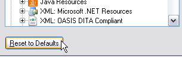

Implement the UI Controller Class
Implement a class that controls the actual plug-in user interface.
Settings Page Scenarios
A settings page for the plug-in user interface must handle these scenarios:
- The user clicks Reset to Defaults, restoring all control elements to their default settings
- The user clicks OK, saving the settings
- The user navigates to another settings page, which should save changes to form control elements
- The user clicks Cancel, discarding all changes to control settings
The settings page does not implement its own OK, Cancel, or Reset buttons. Instead, it uses the control elements provided by the framework's dialog box.
Below is an example of a settings page as implemented for a default file type in Trados Studio:

Implement the Settings Page Class
Add a class called, for example, SettingsPage.cs to your project. This class is referenced from the File Type Component Builder (see Extending existing File Type Component Builder). It is not the UI class itself that is referenced. Without this reference, the plug-in UI would not be recognized or displayed by Trados Studio.
This class acts as an intermediary between the plug-in UI (see Implement the User Interface) and the class that stores and retrieves settings to/from the settings bundle (see Loading and Saving the Settings).
This class requires the following namespaces:
Sdl.FileTypeSupport.Framework.Core.SettingsSdl.Core.SettingsSdl.Core.PluginFramework
This component must derive from the AbstractFilterDefinitionSettingsPage base class, which provides methods for setting the plug-in UI according to the settings bundle values.
Create two objects: one based on the VerifierSettings class and one for the user interface (SettingsUI):
[FileTypeSettingsPage(Id="XMLVerifier_Settings", Name="Settings_Name", Description="Settings_Description")]
class SettingsPage : AbstractFileTypeSettingsPage<SettingsUI, VerifierSettings>
Reset to Default Settings
The ResetToDefaults method is triggered when the user clicks Reset to Defaults in the user interface:

Override this method to call ResetToDefaults on the VerifierSettings class, then update the user interface: